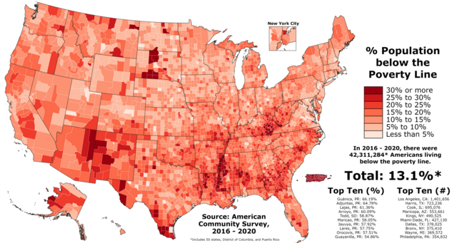
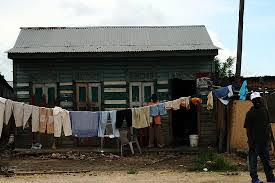
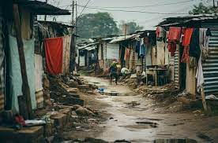

Poverty is at an all-time high around the world, with millions of people struggling to meet their basic needs like food, clean water, and shelter. It happens when people don’t have enough money or resources to live a healthy and secure life. Problems like covid wars, and climate change have made poverty worse, especially for people who were already struggling. Right now, over 700 million people live on less than $2.15 a day. Poverty doesn’t just affect money, it also hurts education, health, and chances for a better future. To fight poverty, the world needs to work together to create solutions that address its causes and help people improve their lives.
In the United States, poverty remains a significant issue, affecting around 11% of the population. Factors like wage inequality, rising healthcare costs, and lack of affordable housing contribute to the widespread poverty. Minorities, particularly Black and Latino communities, face disproportionately high poverty rates. While government programs like food assistance and Medicaid help some families, many struggle with long-term poverty due to systemic issues such as limited access to education and job opportunities.
India faces a high level of poverty, with around 28% of the population living below the poverty line. Rural areas are hit hardest by poverty, with limited access to healthcare, education, and clean water. India’s poverty is exacerbated by rapid population growth, unemployment, and inequality. The government has launched initiatives to address these issues, such as rural development programs, microfinance, and efforts to improve access to education and healthcare.
Although China has lifted millions out of poverty over the past few decades, around 10% of the population, especially in rural regions, still lives in poverty. The rapid industrialization and urbanization have created a significant wealth gap between urban and rural areas. China’s government has focused on poverty alleviation programs aimed at improving infrastructure, education, and economic opportunities in underdeveloped areas, though challenges remain for marginalized groups.
Nigeria faces extreme poverty, with nearly 40% of its population living below the poverty line. The country’s poverty is driven by factors like corruption, poor governance, and ongoing conflicts, particularly in the northern regions. Lack of access to education, healthcare, and clean water contribute to the struggles faced by millions of Nigerians. Local and international efforts focus on improving basic services, reducing corruption, and fostering economic development in rural and conflict-affected areas.
